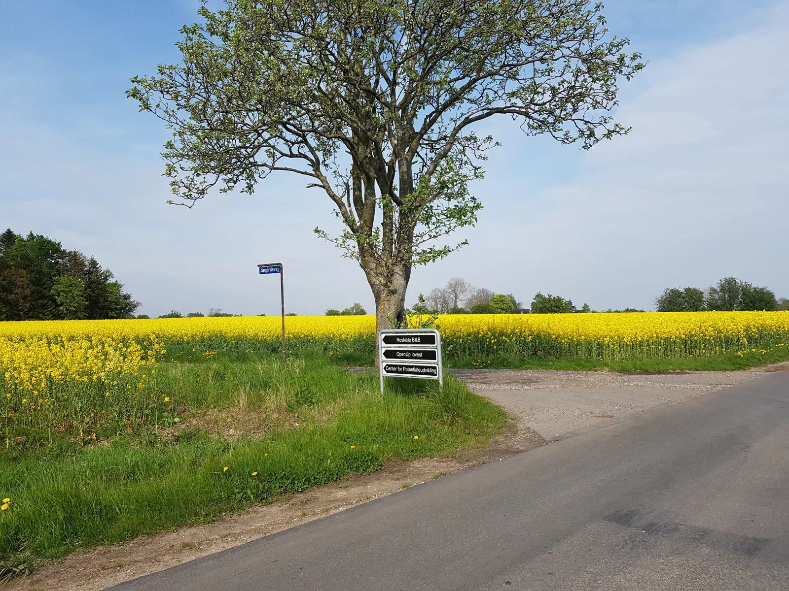

Roskilde B&B
Søgårdsvej 2, Snoldelev2621 Gadstrup
Denmark
+45 6172 8000
ps@roskildebnb.dk
Roskilde and Solrød, with lakes, beaches, shops and restaurants, are 10–12 minutes away by car. Greve, Lille Skensved, Hedehusene and Ølby are a similar distance away. Copenhagen Airport is 31 minutes away.
Supermarkets in three nearby towns are five minutes away by car. Taxis can be booked in advance or arrive within ten minutes.
Get directions